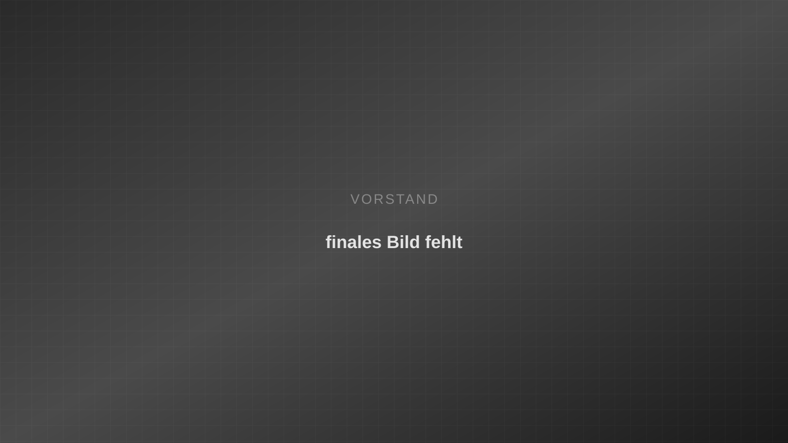

Über uns
Der Historische Verein Winterthur vermittelt Geschichte abwechslungsreich und lebendig — als Träger von Museum Schaffen und den historischen Häusern der Stadt.
Seit 1874 in Winterthur
Wir organisieren Vorträge und Exkursionen, fördern Publikationen zur Geschichte Winterthurs und betreiben Museum Schaffen, Museum Lindengut sowie Schloss Mörsburg.
Auf museumschaffen.ch finden Sie das Museumsprogramm. Diese Vereinswebsite hält Mitgliedschaft, Agenda und Orientierung bewusst einfacher — mit grossen Schaltflächen, klarer Schrift und weniger Ablenkung.
1874
gegründet
3
Museen
> 300
Mitglieder
ab 30
CHF / Jahr
Organisation
Vorstand

Legende
Gruppenfoto des Vorstands des Historischen Vereins Winterthur (Platzhalter — finales Bild folgt).
- Christian Huggenberg — Präsident
- Rita Borner — Vorstandsmitglied
- Anja Huber — Vorstandsmitglied
- Name — Funktion
- Name — Funktion
- Name — Funktion
- Name — Funktion
- Name — Funktion
- Name — Funktion
Namen und Funktionen werden bei der finalen Bildlieferung geprüft und ergänzt.
Häufige Fragen
Ist der HVW dasselbe wie Museum Schaffen?
Ja, der Historische Verein Winterthur ist Träger und Initiator von Museum Schaffen. museumschaffen.ch zeigt das Museumsprogramm; diese Website die Vereinsseite mit Agenda und Mitgliedschaft.
Für wen ist die Mitgliedschaft gedacht?
Für alle Altersgruppen: Jugendmitgliedschaft bis 25 Jahre ab 30 CHF, Einzel- und Paarmitgliedschaft sowie Freund:innen von Museum Schaffen.
Wo finden Veranstaltungen statt?
In Winterthur — vor allem im Museum Schaffen (Lagerplatz), im Museum Lindengut und auf Schloss Mörsburg.